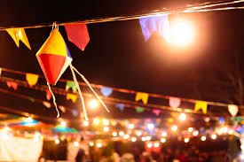
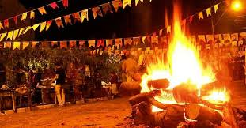
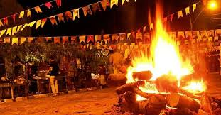

A festa tem raízes europeias, trazida pelos portugueses durante a colonização, mas foi fortemente influenciada por tradições indígenas e africanas, tornando-se uma celebração tipicamente brasileira. Originalmente, era uma festa pagã associada ao solstício de verão no Hemisfério Norte, que foi cristianizada pela Igreja Católica.
Comidas típicas
Milho (principal ingrediente): pipoca, pamonha, canjica, curau, bolo de milho.
Outros pratos: arroz doce, pé de moleque, paçoca, quentão (bebida quente à base de cachaça e gengibre) e vinho quente.
Danças e brincadeiras
Quadrilha: dança em grupo com casais, comandada por um "marcador".
Casamento caipira: encenação humorística de um matrimônio no estilo rural.
Brincadeiras como pescaria, correio elegante, pau-de-sebo e tiro ao alvo.
Trajes típicos
Homens: camisa xadrez, calça remendada, chapéu de palha.
Mulheres: vestido colorido com babados, chapéu de palha e tranças no cabelo.
Decoração
Bandeirinhas coloridas, balões (apesar de proibidos por segurança), fogueiras (simbolizando a proteção dos santos) e barraquinhas.
Nordeste: A região tem as maiores festas, como o São João de Caruaru (PE) e Campina Grande (PB), com grandes arraiais, shows de forró e fogos de artifício.
Sudeste e Sul: Festas em escolas, clubes e praças, com influência caipira.
Norte e Centro-Oeste: Mistura de tradições juninas com elementos locais, como o uso de mandioca em vez de milho em algumas áreas.
A Festa Junina é uma das celebrações mais importantes do Brasil, ao lado do Carnaval, e representa a cultura rural, a religiosidade e a alegria do povo brasileiro.
.jpeg)
.jpeg)
.jpeg) 
